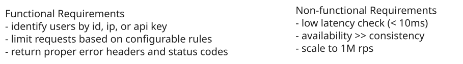
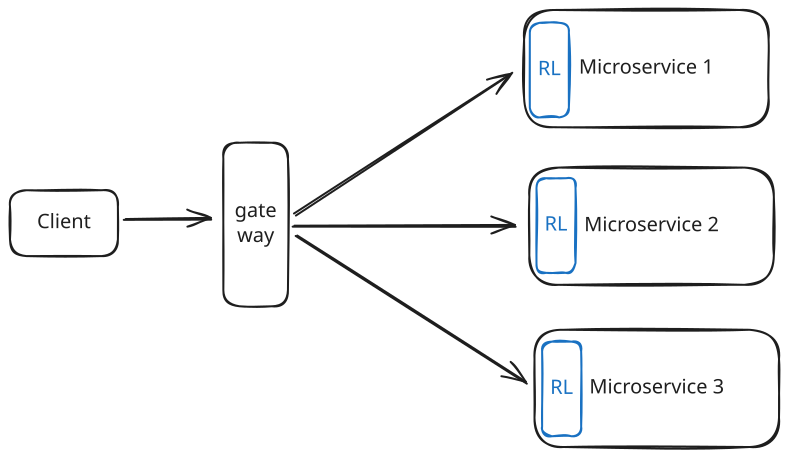
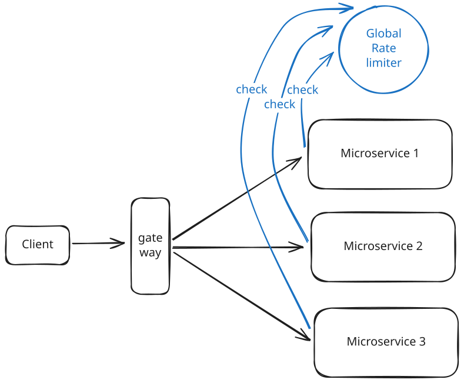
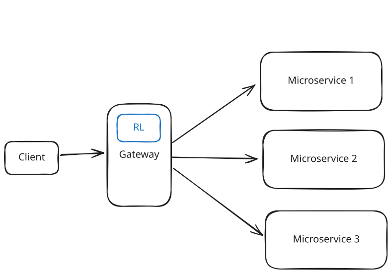
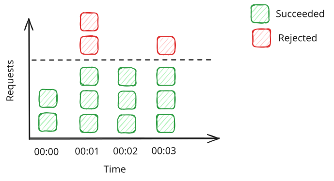
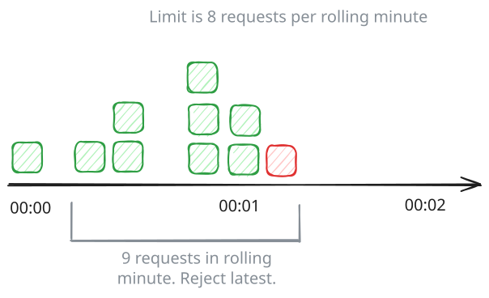
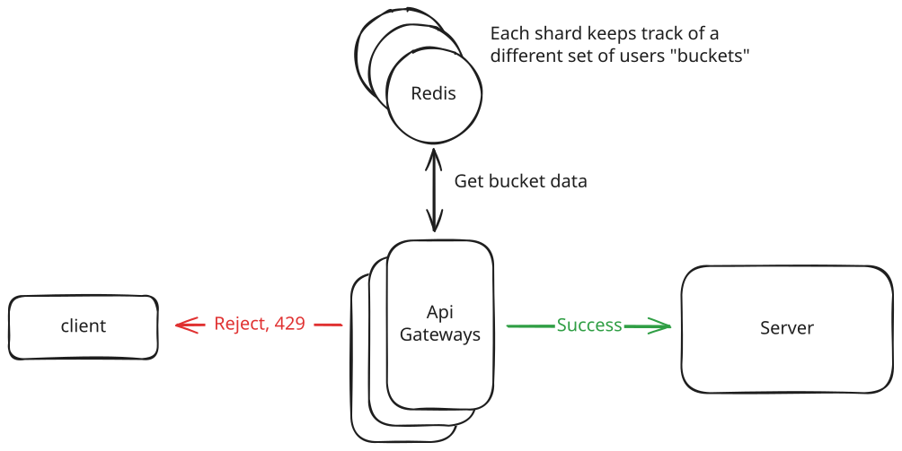
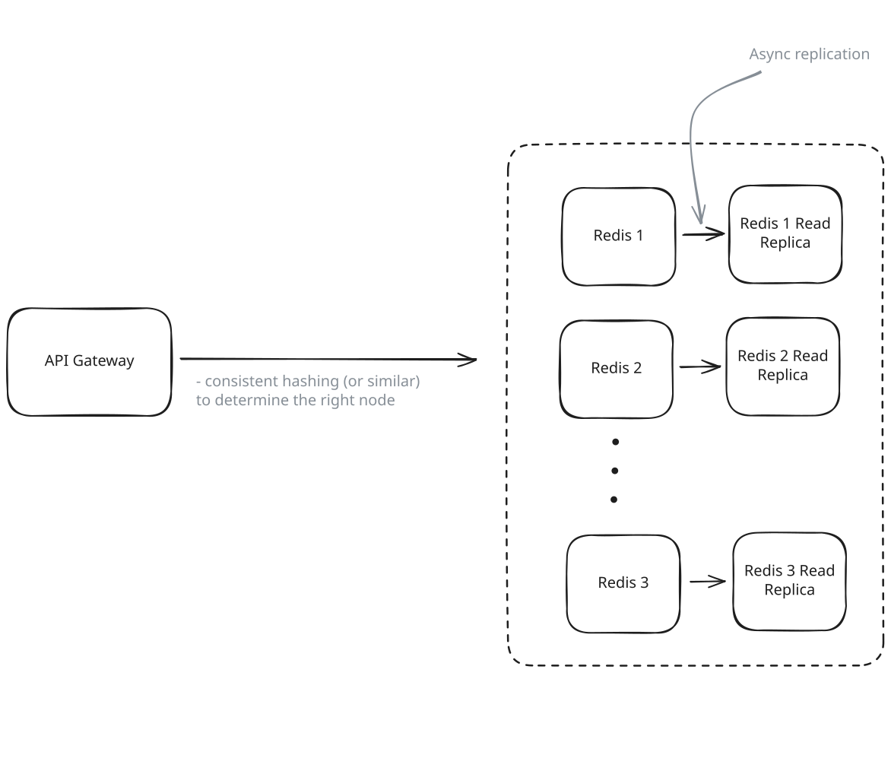
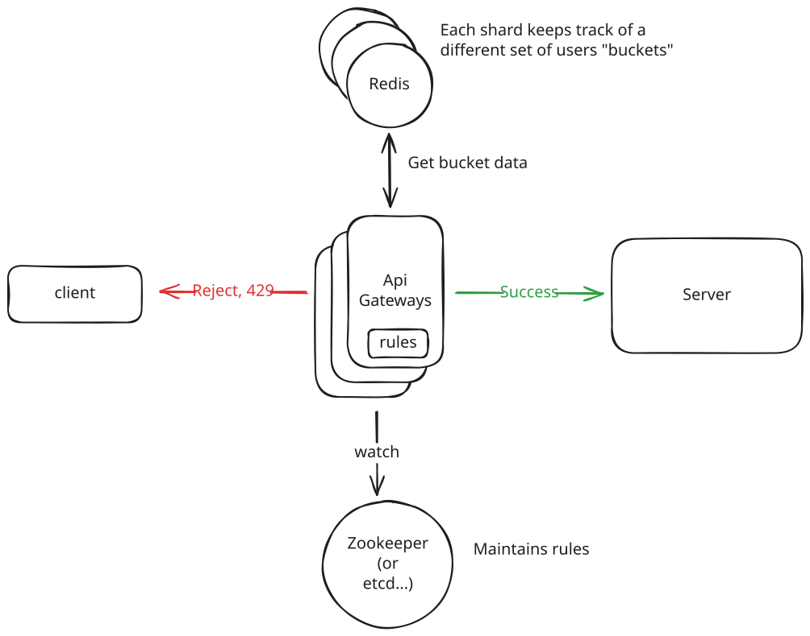

Common Problems
Rate Limiter
Dealing with Contention
Scaling Writes
Scaling Reads
Understanding the Problem
🚦 What is a Rate Limiter?
A rate limiter controls how many requests a client can make within a specific timeframe. It acts like a traffic controller for your API - allowing, for example, 100 requests per minute from a user, then rejecting excess requests with an HTTP 429 "Too Many Requests" response. Rate limiters prevent abuse, protect your servers from being overwhelmed by bursts of traffic, and ensure fair usage across all users.
Functional Requirements
For this breakdown, we'll design a request-level rate limiter for a social media platform's API. This means we're limiting individual HTTP requests (like posting tweets, fetching timelines, or uploading photos) rather than higher-level actions or business operations. We'll focus on a server-side implementation that controls traffic and protects our systems. While client-side rate limiting has value as a complementary approach (which we'll discuss later), server-side rate limiting is essential for security and system protection since clients can't be trusted to self-regulate.
Core Requirements
- The system should identify clients by user ID, IP address, or API key to apply appropriate limits.
- The system should limit HTTP requests based on configurable rules (e.g., 100 API requests per minute per user).
- When limits are exceeded, the system should reject requests with HTTP 429 and include helpful headers (rate limit remaining, reset time).
Below the line (out of scope)
- Complex querying or analytics on rate limit data
- Long-term persistence of rate limiting data

Non-Functional Requirements
At this point, you should ask your interviewer about scale expectations. Are we building this for a startup API with thousands of requests per day, or for a major platform handling millions of requests per second? The scale will completely change our design choices.
We'll assume we're designing for a substantial but realistic load: 1 million requests per second across 100 million daily active users.
Core Requirements
- The system should introduce minimal latency overhead (< 10ms per request check).
- The system should be highly available. Eventual consistency is ok as slight delays in limit enforcement across nodes are acceptable.
- The system should handle 1M requests/second across 100M daily active users.
Below the line (out of scope)
- Strong consistency guarantees across all nodes
Here is how this might look on the whiteboard in an interview:

Requirements
The Set Up
Planning the Approach
For a problem like this, you need to show flexibility when choosing the right path through the Hello Interview Delivery Framework. In fact, this is a famous question that is asked very differently by different interviewers at different companies. Some are looking for more low-level design, even code in some instances. Others are more focused on how the system should be architected and scaled.
In this breakdown, we'll follow the most common path (and the one I take when I ask this question) where we balance algorithm selection with high-level distributed system design that can handle the expected load.
I'll cover the simple set of core entities and system interface, then focus most of our time on rate limiting algorithms and scaling challenges - that's where the real design decisions happen.
Defining the Core Entities
While rate limiters might seem like simple infrastructure components, they actually involve several important entities that we need to model properly:
Rules: The rate limiting policies that define limits for different scenarios. Each rule specifies parameters like requests per time window, which clients it applies to, and what endpoints it covers. For example: "authenticated users get 1000 requests/hour" or "the search API allows 10 requests/minute per IP."
Clients: The entities being rate limited - this could be users (identified by user ID), IP addresses, API keys, or combinations thereof. Each client has associated rate limiting state that tracks their current usage against applicable rules.
Requests: The incoming API requests that need to be evaluated against rate limiting rules. Each request carries context like client identity, endpoint being accessed, and timestamp that determines which rules apply and how to track usage.
These entities work together: when a Request arrives, we identify the Client, look up applicable Rules, check current usage against those rules, and decide whether to allow or deny the request. The interaction between these entities powers our rate limiter.
System Interface
A rate limiter is an infrastructure component that other services call to check if a request should be allowed. The interface is straightforward:
isRequestAllowed(clientId, ruleId) -> { passes: boolean, remaining: number, resetTime: timestamp }This method takes a client identifier (user ID, IP address, or API key) and a rule identifier, then returns whether the request should be allowed based on current usage. It also provides information for response headers like X-RateLimit-Remaining and X-RateLimit-Reset.
High-Level Design
We start by building an MVP that works to satisfy the core functional requirements. This doesn't need to scale or be perfect. It's just a foundation for us to build upon later. We will walk through each functional requirement, making sure each is satisfied by the high-level design.
1) The system should identify clients by user ID, IP address, or API key to apply appropriate limits
Before we can limit anyone, we need to make two key decisions. First, where should our rate limiter live in the architecture? This determines what information we have access to and how it integrates with the rest of our system. Second, how do we identify different clients so we can apply the right limits to the right users? These decisions are connected - your placement choice affects what client information you can easily access, and your identification strategy influences where the rate limiter makes sense to deploy.
Where should we place the rate limiter?
You have three main options here, each with different trade-offs:
Approach
Each application server or microservice has rate limiting built directly into the application code. When a request comes in, the server checks its local in-memory counters, updates them, and decides whether to allow or reject the request. This is really fast since everything happens in memory, no network calls, no external dependencies.

In-Process Rate Limiter
Challenges
The main problem is that each server only knows about its own traffic, not the global picture. Say you want to limit users to 100 requests per minute. If you have 5 application servers behind a load balancer, and requests get distributed evenly, each server might see 20 requests per minute from a user and think "that's fine, well under 100." But globally, the user is actually making 100 requests per minute across all servers.
Even worse, if the load balancer changes how it routes traffic, or if one server gets more load than others, your limits become completely unpredictable. A user might get 100 requests through one server and 100 through another, for 200 total.
This approach only works if you have a single application server or if you're okay with approximate limits that can be off by a factor equal to your server count.
Approach
The rate limiter becomes its own microservice that sits between your clients and application servers. When a request arrives at an application server, the server first makes an API call to the rate limiting service: "Should I allow this request from user 12345?" The rate limiter checks its centralized counters and responds with either "yes, allow it" or "no, reject with 429."
This architecture gives you a lot more flexibility. Your application servers can provide rich context when making the rate limit check like user subscription tier, account status, the specific API endpoint being called, or even complex business logic like "allow extra requests during Black Friday." You can also have different rate limiting services for different parts of your system, each tuned for specific needs.
Most importantly, the rate limiting service maintains global state, so it can enforce precise limits across all your application servers. If you want 100 requests per minute globally, you get exactly that regardless of how many servers you have.

Dedicated Service Rate Limiter
Challenges
The biggest downside is latency. Every single request to your system now requires an additional network round trip before it can be processed. Even if the rate limiter is fast (say 10ms), that's still 10ms added to every request. At scale, this adds up.
You've also introduced another point of failure. If your rate limiting service goes down, you need to decide: do you fail open (allow all requests through, risking overload) or fail closed (reject all requests, essentially taking your API offline)? Neither option is great.
There's operational complexity too. You now have another service to deploy, monitor, scale, and maintain. The rate limiting service itself needs to be highly available, which means you need redundancy, health checks, and probably some form of data replication.
Finally, you need to handle network issues gracefully. What if the rate limiter is slow to respond? Do you wait (adding more latency) or timeout and make a guess? What if there are network partitions between your app servers and the rate limiter?
Approach
The rate limiter runs at the very edge of your system, integrated into your API gateway or load balancer. Every incoming request hits the rate limiter first, before it reaches any of your application servers. The rate limiter examines the request (checking IP address, user authentication headers, API keys), applies the appropriate limits, and either forwards the request downstream or immediately returns an HTTP 429 response.
This is the most popular approach in production systems because it's conceptually simple and provides strong protection. Your application servers never see blocked requests, so they can focus entirely on processing legitimate traffic. For those who like analogies, the rate limiter acts like a bouncer at a club. Troublemakers get turned away at the door, not after they're already inside causing problems like was the case with our "Good" approach.

API Gateway Rate Limiter
Challenges
The main limitation is context. The rate limiter only has access to information available in the HTTP request itself - headers, URL, IP address, and basic authentication tokens. It can't see deeper business logic or user context that might live in your application layer. For example, you can't easily implement rules like "premium users get 10x higher limits" unless that premium status is encoded in a JWT token or similar.
There's also the question of where to store the rate limiting state. The gateway needs fast access to counters and timestamps, which usually means an in-memory store like Redis. But now you have external dependencies and need to handle cases where Redis is slow or unavailable.
We'll talk all about how to do this effectively in our deep dives!
For our design, we'll go with the API Gateway approach. It's the most common pattern and gives us centralized control without adding extra network calls to every request. Now we can focus our attention to the next question, how do we identify clients?
How do we identify clients?
Since we chose the API Gateway approach, our rate limiter only has access to information in the HTTP request itself. This includes the request URL/path, all HTTP headers (Authorization, User-Agent, X-API-Key, etc.), query parameters, and the client's IP address. While we can technically make external calls to databases or other services, it adds latency we want to avoid so we'll stick to the request itself.
We first need to decide what makes a "client" unique. The key we use determines how limits get applied. We have three main options:
- User ID: Perfect for authenticated APIs. Each logged-in user gets their own rate limit allocation. This is typically present in the Authorization header as a JWT token.
- IP Address: Good for public APIs or when you don't have user accounts. But watch out for users behind NATs or corporate firewalls. The IP address is typically present in the X-Forwarded-For header.
- API Key: Common for developer APIs. Each key holder gets their own limits. Most typically, this is denoted in the X-API-Key header.
This is the perfect time to ask your interviewer some questions. Are all users authenticated? Is this a developer API that requires API keys? etc.
In practice, you'll probably want a combination. Maybe authenticated users get higher limits than anonymous IPs, and premium users may get even more. This is reflective of real systems that don't just enforce a global limit, but layer multiple rules. For example:
- Per-user limits: "Alice can make 1000 requests/hour"
- Per-IP limits: "This IP can make 100 requests/minute"
- Global limits: "Our API can handle 50,000 requests/second total"
- Endpoint-specific limits: "The search API is limited to 10 requests/minute, but profile updates are 100/minute"
Your rate limiter needs to check all applicable rules and enforce the most restrictive one. If Alice has used 50 of her 1000 requests but her IP has hit the 100 request limit, she gets blocked.
2) The system should limit requests based on configurable rules
Now we get to the heart of rate limiting: the algorithm that decides whether to allow or reject requests. This is where the real engineering decisions happen but it's not commonly the central focus of a system design interview (unlike a low-level design interview). You'll want to acknowledge that you understand the different options and make a choice, but it's unlikely you'll need to implement it, even with pseudocode.
There are four main algorithms used in production systems, each with different trade-offs around accuracy, memory usage, and complexity. We'll examine each one to understand when you'd choose it.
Fixed Window Counter
The simplest approach divides time into fixed windows (like 1-minute buckets) and counts requests in each window. For each user, we'd maintain a counter that resets to zero at the start of each new window. If the counter exceeds the limit during a window, reject new requests until the window resets.
For example, with a 100 requests/minute limit, you might have windows from 12:00:00-12:00:59, 12:01:00-12:01:59, etc. A user can make 100 requests during each window, then must wait for the next window to start.

Fixed Window Counter
This is really simple to implement. It's just a hash table mapping client IDs to (counter, window_start_time) pairs. The main challenges are boundary effects: a user could make 100 requests at 12:00:59, then immediately make another 100 requests at 12:01:00, effectively getting 200 requests in 2 seconds. There's also potential for "starvation" if a user hits their limit early in a window.
{
"alice:12:00:00": 100,
"alice:12:01:00": 5,
"bob:12:00:00": 20,
"charlie:12:00:00": 0,
"dave:12:00:00": 54,
"eve:12:00:00": 0,
"frank:12:00:00": 12,
}Sliding Window Log
This algorithm keeps a log of individual request timestamps for each user. When a new request arrives, you remove all timestamps older than your window (e.g., older than 1 minute ago), then check if the remaining count exceeds your limit.
This gives you perfect accuracy. You're always looking at exactly the last N minutes of requests, regardless of when the current request arrives. No boundary effects, no unfair bursts allowed.

Sliding Window Log
The downside is memory usage. For a user making 1000 requests per minute, you need to store 1000 timestamps. Scale this to millions of users and you quickly run into memory problems. There's also computational overhead scanning through timestamp logs for each request.
Sliding Window Counter
This is a clever hybrid that approximates sliding windows using fixed windows with some math. You maintain counters for the current window and the previous window. When a request arrives, you estimate how many requests the user "should have" made in a true sliding window by weighing the previous and current windows based on how far you are into the current window.
For example, if you're 30% through the current minute, you count 70% of the previous minute's requests plus 100% of the current minute's requests.
This gives you much better accuracy than fixed windows while using minimal memory. It's just two counters per client. The trade-off is that it's an approximation that assumes traffic is evenly distributed within windows, and the math can be tricky to implement correctly.
Token Bucket
Think of each client having a bucket that can hold a certain number of tokens (the burst capacity). Tokens are added to the bucket at a steady rate (the refill rate). Each request consumes one token. If there are no tokens available, the request is rejected.
For example, a bucket might hold 100 tokens (allowing bursts up to 100 requests) and refill at 10 tokens per minute (steady rate of 10 requests/minute). A client can make 100 requests immediately, then must wait for tokens to refill.
This handles both sustained load (the refill rate) and temporary bursts (the bucket capacity). It's also simple to implement, you just track (tokens, last_refill_time) per client. The challenge is choosing the right bucket size and refill rate, and handling "cold start" scenarios where idle clients start with full buckets.

Token Bucket
For our system, we'll go with the Token Bucket algorithm. It strikes the best balance between simplicity, memory efficiency, and handling real-world traffic patterns. Companies like Stripe use this approach because it naturally accommodates the bursty nature of API traffic while still enforcing overall rate limits.
Now we have a new problem. We know how the Token Bucket algorithm works conceptually, but where and how do we actually store each user's bucket? Each bucket needs to track two pieces of data: the current token count and the last refill timestamp. This state needs to be shared across all our API gateway instances.
If we store the buckets in memory within each gateway instance, we're back to the same coordination problem we discussed with in-process rate limiting. User requests get distributed across multiple gateways by the load balancer. Each gateway would maintain its own version of a user's token bucket, seeing only a fraction of their total traffic.
For example, if Alice makes 50 requests that go to Gateway A and 50 requests that go to Gateway B, each gateway thinks Alice has only made 50 requests and allows them all. But globally, Alice has made 100 requests and should be rate limited. Our algorithm becomes useless without centralized state.
We can use something like Redis. Redis is a fast, in-memory data store that all our gateway instances can access. Redis can become our central source of truth for all token bucket state. When any gateway needs to check or update a user's rate limit, it talks to Redis.
Here's exactly how the Token Bucket algorithm works with Redis:
- A request arrives at Gateway A for user Alice with a user ID of alice.
- The gateway calls Redis to fetch Alice's current bucket state using HMGET alice:bucket tokens last_refill. The HMGET command retrieves the values of multiple keys from a Redis hash. In this case, we're getting the current tokens count and the last_refill timestamp for Alice's bucket.
- The gateway calculates how many tokens to add to Alice's bucket based on the time elapsed since her last refill. If Alice's bucket was last updated 30 seconds ago and her refill rate is 1 token per second, the gateway adds 30 tokens to her current count, up to the bucket's maximum capacity.
- The gateway then updates Alice's bucket state atomically using a Redis transaction to prevent race conditions:
The MULTI/EXEC block ensures all commands execute as a single atomic operation. The HSET commands update the hash fields with the new token count and timestamp, while EXPIRE automatically deletes the bucket after 1 hour of inactivity to prevent memory leaks.
MULTI HSET alice:bucket tokens <new_token_count> HSET alice:bucket last_refill <current_timestamp> EXPIRE alice:bucket 3600 EXEC - Finally, the gateway makes the final decision based on Alice's updated token count. If she has at least 1 token available, the gateway allows the request and decrements her token count by 1. If she has no tokens remaining, the gateway rejects the request.
But wait - there's a race condition!
Despite the MULTI/EXEC transaction, our implementation still has a subtle race condition. The problem is that the read operation (HMGET) happens outside the transaction. If two requests for the same user arrive simultaneously, both gateways read the same initial token count, both calculate that they can allow the request, and both update the bucket. This means we could allow 2 requests when only 1 token was available.
The solution is to move the entire read-calculate-update logic into a single atomic operation. With Redis, this can be achieved using something called Lua scripting. Lua scripts are atomic, so the entire rate limiting decision becomes race-condition free. Instead of separate read and write operations, we send a Lua script to Redis that reads the current state, calculates the new token count, and updates the bucket all in one atomic step.
Pattern: Dealing with Contention
Race conditions in distributed counters are a classic dealing with contention challenge. Multiple threads or processes trying to update the same resource simultaneously can lead to lost updates, even when individual operations are atomic. The solution is expanding the atomic boundary to include the entire read-modify-write sequence.
Why Redis works perfectly for this:
- Speed - Sub-millisecond responses for simple operations
- Automatic cleanup - EXPIRE removes inactive user buckets after 1 hour of no activity
- High availability - Can be replicated across multiple Redis instances
- Atomic operations - The MULTI/EXEC transaction ensures no race conditions between gateways
The end result is precise, consistent rate limiting across all gateway instances. Whether Alice's 100th request goes to Gateway A, B, or C, they all see the same token bucket state and enforce the same limit.
3) When limits are exceeded, reject requests with HTTP 429 and helpful headers
Now we need to decide what happens when a user hits their rate limit. This might seem straightforward (just return an error) but there are important design decisions that affect both user experience and system performance.
Should we drop requests or queue them?
The first decision is whether to immediately reject excess requests or queue them for later processing. Most rate limiters take the "fail fast" approach, they immediately return an HTTP 429 status code when limits are exceeded. This is what we'll implement.
The alternative would be queuing excess requests and processing them when the user's rate limit resets. While this sounds user-friendly, it creates more problems than it solves. Queued requests consume memory and processing resources. Users might think their requests failed and retry, creating even more load. Worst of all, queue processing delays make your API response times unpredictable.
There are niche cases where queuing makes sense, like batch processing systems that can afford to wait, but for interactive APIs, fast failure is almost always the right choice.
How can we make the response helpful?
429 is the standard HTTP status code for "Too Many Requests". It exists in the HTTP spec for exactly this purpose.
When rejecting a request, we return HTTP 429 "Too Many Requests" along with headers that help clients understand what happened and how to recover. The key headers are:
- X-RateLimit-Limit: The rate limit ceiling for that request (e.g., "100")
- X-RateLimit-Remaining: Number of requests left in the current window (e.g., "0")
- X-RateLimit-Reset: When the rate limit resets, as a Unix timestamp (e.g., "1640995200")
Some systems also include Retry-After, which tells the client how many seconds to wait before trying again.
Here's what a complete 429 response might look like:
HTTP/1.1 429 Too Many Requests
X-RateLimit-Limit: 100
X-RateLimit-Remaining: 0
X-RateLimit-Reset: 1640995200
Retry-After: 60
Content-Type: application/json
{
"error": "Rate limit exceeded",
"message": "You have exceeded the rate limit of 100 requests per minute. Try again in 60 seconds."
}These headers allow well-behaved clients to implement proper backoff strategies. A client can see exactly when to retry rather than hammering your API with failed requests.
As far as the interview goes, you'll typically just want to callout that you know you'll respond with a 429 and the appropriate headers.
Potential Deep Dives
Up until this point we've designed a simple, single-node (meaning one Redis instance) rate limiter. But now we need to discuss how to scale it to handle 1M requests/second across 10M users while maintaining high availability and low latency.
For these distributed system challenges, you should try to lead the conversation toward deep dives that address your non-functional requirements. However, interviewers will likely jump in with probing questions, so be prepared to be flexible.
1) How do we scale to handle 1M requests/second?
Our current design has multiple API gateways talking to a single Redis instance. This works fine for smaller loads, but the math breaks down at our target scale of 1M requests/second. A typical Redis instance can handle around 100,000-200,000 operations per second depending on the operation complexity. Each one of our rate limit checks requires multiple Redis operations, at minimum an HMGET to fetch state and an HSET to update it. So our single Redis instance can realistically handle maybe 50,000-100,000 rate limit checks per second before becoming the bottleneck.
At 1M requests/second, we need to distribute the Redis load across multiple instances. But this isn't quite as simple as just spinning up more Redis servers because we need a way to partition the rate limiting data so each request knows which Redis instance to talk to.
Pattern: Scaling Writes
Rate limiters demonstrate classic scaling writes challenges with millions of counter updates per second. Each rate limit check requires atomic read-modify-write operations to update token buckets or request counters across distributed Redis shards.
The sharding strategy depends on our rate limiting rules. Remember we identified multiple client types earlier - user IDs for authenticated users, IP addresses for anonymous users, and API keys for developer access. We need to shard consistently so that all of a client's requests always hit the same Redis instance. If user "alice" sometimes hits Redis shard 1 and sometimes hits shard 2, her rate limiting state gets split and becomes useless.
We need a distribution algorithm like consistent hashing to solve this. For authenticated users, we hash their user ID to determine which Redis shard stores their rate limit data. For anonymous users, we hash their IP address. For API key requests, we hash the API key. This ensures each client's rate limiting state lives on exactly one shard, while distributing the load evenly across all shards.

Redis Sharding
Each API gateway needs routing logic to determine which Redis shard to query. When a request arrives, the gateway extracts the appropriate identifier (user ID, IP, or API key), applies the distribution algorithm, and routes the rate limit check to the correct Redis instance. The Token Bucket algorithm remains exactly the same, we're just talking to different Redis instances instead of one.
With 10 Redis shards, each handling ~100k operations/second, we should be able to handle our 1M request/second target.
In production, you'd likely use Redis Cluster rather than managing individual Redis instances yourself. Redis Cluster automatically handles the data sharding we just described by dividing keys across 16,384 hash slots and distributing those slots across multiple Redis nodes. When you store a rate limit key like alice:bucket, Redis Cluster automatically determines which node should store it based on the key's hash slot. This way instead of building custom consistent hashing logic in your API gateways, you just connect to the Redis Cluster and it handles routing automatically.
2) How do we ensure high availability and fault tolerance?
Now that we've scaled to multiple Redis shards, each shard becomes a critical component in our system. If any Redis shard goes down, all users whose rate limiting data lives on that shard lose their rate limiting functionality. This creates availability issues and can lead to cascading failures if users start retrying aggressively when they can't get proper rate limit responses.
When a Redis shard becomes unavailable, we face a fundamental decision about our failure mode. We have two options:
Approach
When the rate limiter can't reach Redis, reject all requests with HTTP 503 "Service Unavailable" or HTTP 429 responses. This is the most restrictive option. No requests get through that we can't verify are within limits.
Challenges
This will effectively take your API offline during Redis outages. Users see failed requests even if your backend services are healthy. In practice, this often creates worse problems than the original issue rate limiting was meant to solve. Users may retry aggressively when they see 503 errors, creating even more load on your systems.
However, fail-closed does have legitimate use cases. Financial systems processing payments might prefer to reject transactions rather than risk processing them without rate limits. High-security environments where uncontrolled access is worse than downtime might also choose this approach.
Approach
When the rate limiter can't reach Redis, allow all requests to proceed as if rate limiting was disabled. The API gateway skips rate limit checks and forwards requests directly to backend services. This keeps your API available even when the rate limiting infrastructure has issues.
Challenges
The obvious downside is temporarily losing rate limit protection. During Redis outages, malicious users could potentially overwhelm your backend services with requests. More critically, this can cause cascade failures - if Redis failed because you're already under heavy load, failing open sends ALL that traffic downstream, potentially causing total system collapse.
For social media platforms, this is especially dangerous during viral events when traffic spikes are already stressing the system. Failing open could turn a rate limiter outage into a complete platform failure.
You'll see that these are both "good" options, this is because it depends on the specific requirements of the system!
For our social media platform, we'll choose fail-closed. While this seems counterintuitive since we want high availability, the reality is that rate limiting failures often coincide with traffic spikes when we need protection most. During viral events, if Redis fails and we fail open, the sudden flood of tweets, timeline updates, and notifications could overwhelm our backend databases, turning a rate limiter outage into complete platform failure. Brief periods of rejected requests are preferable to cascading system collapse.
Of course, choosing a failure mode is just damage control. The better approach is preventing Redis failures in the first place through high availability design. The standard solution for Redis availability is master-replica replication. Each Redis shard gets one or more read replicas that continuously synchronize with the master. When the master fails, one of the replicas is automatically promoted to become the new master. This works particularly well with Redis Cluster, which has built-in failover capabilities that can detect master failures and promote replicas without manual intervention. The trade-off is increased infrastructure cost and the need to handle replica synchronization lag, though Redis replication is typically very fast.

Redis Failover
While we don't tend to talk about it much in our breakdowns (simply because there are usually most interesting things to mention), monitoring and alerting are important for maintaining our high availability. We'll want to track Redis health metrics like CPU usage, memory consumption, and network connectivity across all shards. We also need application-level monitoring of rate limiting success rates, response latencies, and alerts that trigger when we enter fail-open mode. The goal is detecting and responding to issues quickly enough that users don't experience degraded service.
3) How do we minimize latency overhead?
Every rate limit check requires a network round trip to Redis, which adds latency to user requests. While Redis operations are typically sub-millisecond, the network overhead can add several milliseconds per request. At 1M requests/second, this latency can become an issue.
The most important optimization is connection pooling. Instead of establishing a new TCP connection to Redis for each rate limit check, your API gateways maintain a pool of persistent connections. This eliminates the TCP handshake overhead (which can be 20-50ms depending on network distance) and allows connections to be reused across multiple requests. Most Redis clients handle connection pooling automatically, but you need to tune the pool size based on your request volume and Redis response times.
Geographic distribution provides the biggest latency wins. Deploy your rate limiting infrastructure close to your users e.g. API gateways and Redis clusters in multiple regions. A user in Tokyo talking to a Redis instance in Virginia will see much higher latency than talking to one in the same region. The trade-off is complexity around data consistency across regions, but for rate limiting, you can often accept eventual consistency between regions in exchange for lower latency.
Other optimizations worth mentioning briefly but we won't dive into: local caching of rate limit state can work but is risky since stale cache data can lead to incorrect rate limiting decisions. Redis pipelining or Lua scripts can batch operations to reduce round trips. Request batching can help when multiple requests from the same user arrive simultaneously. However, these optimizations add complexity and are usually unnecessary if you've handled connection pooling and geographic distribution properly. In an interview, I'd probably avoid them unless explicitly asked.
4) How do we handle hot keys (viral content scenarios)?
Hot keys are often mentioned in system design discussions, and we do cover techniques for handling them in our scaling reads pattern. For rate limiting, hot keys can arise from both abusive traffic and legitimate high-volume clients.
Pattern: Scaling Reads
While rate limiters primarily handle writes (counter updates), hot key scenarios create extreme scaling reads pressure when thousands of requests from the same IP or user hit rate limit checks simultaneously, overwhelming individual Redis shards.
Think about what it would take to create a hot key in our rate limiter. A single user or IP would need to generate enough requests to overwhelm a Redis shard - we're talking tens of thousands of requests per second from one source. While this often indicates abuse (DDoS attacks, misconfigured bots), it can also come from legitimate high-volume clients like analytics systems, data pipelines, or mobile apps with aggressive refresh patterns.
We need different strategies for different scenarios:
For Legitimate High-Volume Clients:
- Client-side rate limiting: Encourage well-behaved clients to implement their own rate limiting to smooth traffic patterns. This prevents legitimate users from accidentally creating hot shards while reducing server load. Many API SDKs include built-in client-side rate limiting that respects server response headers.
- Request queuing/batching: Allow clients to batch multiple operations into single requests, reducing the total number of rate limit checks needed.
- Premium tiers: Offer higher rate limits for power users who need them, potentially with dedicated infrastructure.
For Abusive Traffic:
- Automatic blocking: When a client hits rate limits consistently (say, 10 times in a minute), temporarily block their IP/API key entirely by adding them to a blocklist. The list can be kept in one of the Redis shards and only checked in case of cache misses.
- DDoS protection: Use services like Cloudflare or AWS Shield that can detect and block malicious traffic before it reaches your rate limiter.
The key insight is that client-side rate limiting serves as a valuable complement to server-side protection. While you can't trust clients for security, encouraging good citizenship in your API ecosystem reduces infrastructure load and prevents legitimate users from accidentally triggering hot shard scenarios.
It's not inconceivable that you could genuinely have legitimate users sharing IP addresses (corporate NATs, public WiFi), but you should design your rate limits to account for this upfront rather than trying to handle hot keys after the fact. Set higher limits for IP-based rate limiting and rely more on authenticated user limits where possible.
5) How do we handle dynamic rule configuration?
So far we've assumed rate limiting rules are static, user X gets Y requests per minute. But production systems need flexibility to adjust limits without deploying new code. You might need to temporarily increase limits during a product launch, give premium customers higher limits, or quickly reduce limits if you're seeing unusual traffic patterns.
There are two main approaches for handling dynamic configuration updates:
Approach
Store rule configuration in a database or dedicated configuration service. Your API gateways periodically poll for configuration changes (say, every 30 seconds) and update their rate limiting logic accordingly. This is the most common approach because it's straightforward to implement and handles the majority of use cases.
The configuration service can be as simple as a database table with columns for client_type, endpoint, requests_per_minute, etc. Gateways query this table on a schedule and cache the results locally.
Challenges
The main downside is update delay. There's always a window between when you change a rule and when it takes effect across all gateways. If you need to emergency-reduce limits due to an attack, you might wait up to 30 seconds for the change to propagate. For most operational scenarios, this delay is acceptable, but it can be problematic for urgent situations.
Approach
Use a push-based system where configuration changes are immediately sent to all API gateways. This is exactly what ZooKeeper was designed for - distributed configuration management with real-time notifications. ZooKeeper maintains configuration data and notifies all connected clients (your API gateways) immediately when any configuration changes. Other options include Redis pub/sub or custom configuration services that maintain persistent connections to gateways.
When an operator changes a rate limit rule, the configuration service immediately notifies all connected gateways, which update their rules within seconds.

ZooKeeper
Challenges
This approach adds a lot more complexity. You need to handle connection failures, ensure all gateways receive updates, and deal with partial failures where some gateways update successfully while others don't. You also need fallback mechanisms when the push system is unavailable.
The operational complexity is usually only justified for systems that need very fast rule updates, like those dealing with security incidents or high-frequency trading scenarios.
What is Expected at Each Level?
Mid-level
A mid-level candidate will focus mostly on breadth (80% vs 20%) and should be able to craft a high-level design that meets the functional requirements, though many components will be abstractions you understand at a surface level. Your interviewer will spend time confirming you understand what each component does - if you mention Redis, expect them to ask how it works and why you chose it. You should drive the early stages like requirements gathering and basic algorithm selection, but don't expect to proactively spot all design flaws. For this question specifically, you should clearly explain one rate limiting algorithm (Token Bucket works fine), place the rate limiter sensibly in the architecture (API Gateway), identify Redis as the shared state solution, and when asked about scaling, recognize the need to shard Redis with a rough understanding of how that would work.
Senior
As a senior candidate, expectations shift toward more technical depth (60% breadth, 40% depth) where you should confidently discuss trade-offs between different rate limiting algorithms and explain your choices. You should understand distributed systems concepts like consistent hashing, Redis Cluster, and connection pooling without much guidance, know that Redis operations need to be atomic, and suggest MULTI/EXEC transactions. You're expected to clearly explain trade-offs between fail-open vs fail-closed strategies, discuss pros and cons of different rate limiter placements, and proactively identify potential issues like hot keys, Redis availability concerns, and latency optimization opportunities. For rate limiting specifically, E5 candidates should move quickly through basic algorithm discussion to spend time on distributed systems challenges, confidently discuss Redis sharding strategies and failover scenarios, and have opinions about configuration management approaches.
Staff+
Staff+ candidates should demonstrate deep understanding of distributed rate limiting in production environments (40% breadth, 60% depth) and draw from real experience with systems at similar scale. Exceptional proactivity is expected. You should identify edge cases, discuss observability requirements, and suggest operational procedures without guidance. You should have strong opinions about technology choices based on experience, naturally discuss multi-region deployments and data consistency across geographic boundaries, and handle questions about gradual rollouts and canary deployments as routine topics. Staff+ candidates often aren't asked this specific question because these concepts come naturally at this level, but if asked, you should quickly establish design fundamentals and spend most time on production operations, failure modes, and system integration challenges that only come from real-world experience.
Test Your Knowledge
Answer the question below to find your gaps.
Question 1 of 15
Which rate limiting algorithm best handles bursty traffic patterns while maintaining long-term limits?
1
Fixed Window Counter
2
Token Bucket
3
Sliding Window Counter
4
Sliding Window Log